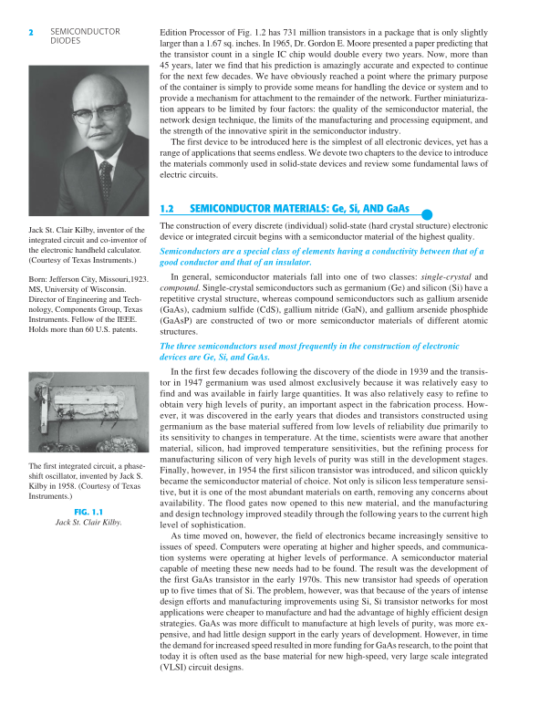

Edition Processor of Fig. 1.2 has 731 million transistors in a package that is only slightlylarger than a 1.67 sq. inches. In 1965, Dr. Gordon E. Moore presented a paper predicting thatthe transistor count in a single IC chip would double every two years. Now, more than45 years, later we find that his prediction is amazingly accurate and expected to continuefor the next few decades. We have obviously reached a point where the primary purposeof the container is simply to provide some means for handling the device or system and toprovide a mechanism for attachment to the remainder of the network. Further miniaturiza-tion appears to be limited by four factors: the quality of the semiconductor material, thenetwork design technique, the limits of the manufacturing and processing equipment, andthe strength of the innovative spirit in the semiconductor industry.The first device to be introduced here is the simplest of all electronic devices, yet has arange of applications that seems endless. We devote two chapters to the device to introducethe materials commonly used in solid-state devices and review some fundamental laws ofelectric circuits.1.2SEMICONDUCTOR MATERIALS: Ge, Si, AND GaAs ●The construction of every discrete (individual) solid-state (hard crystal structure) electronicdevice or integrated circuit begins with a semiconductor material of the highest quality.Semiconductors are a special class of elements having a conductivity between that of agood conductor and that of an insulator.In general, semiconductor materials fall into one of two classes: single-crystal andcompound. Single-crystal semiconductors such as germanium (Ge) and silicon (Si) have arepetitive crystal structure, whereas compound semiconductors such as gallium arsenide(GaAs), cadmium sulfide (CdS), gallium nitride (GaN), and gallium arsenide phosphide(GaAsP) are constructed of two or more semiconductor materials of different atomicstructures.The three semiconductors used most frequently in the construction of electronicdevices are Ge, Si, and GaAs.In the first few decades following the discovery of the diode in 1939 and the transis-tor in 1947 germanium was used almost exclusively because it was relatively easy tofind and was available in fairly large quantities. It was also relatively easy to refine toobtain very high levels of purity, an important aspect in the fabrication process. How-ever, it was discovered in the early years that diodes and transistors constructed usinggermanium as the base material suffered from low levels of reliability due primarily toits sensitivity to changes in temperature. At the time, scientists were aware that anothermaterial, silicon, had improved temperature sensitivities, but the refining process formanufacturing silicon of very high levels of purity was still in the development stages.Finally, however, in 1954 the first silicon transistor was introduced, and silicon quicklybecame the semiconductor material of choice. Not only is silicon less temperature sensi-tive, but it is one of the most abundant materials on earth, removing any concerns aboutavailability. The flood gates now opened to this new material, and the manufacturingand design technology improved steadily through the following years to the current highlevel of sophistication.As time moved on, however, the field of electronics became increasingly sensitive toissues of speed. Computers were operating at higher and higher speeds, and communica-tion systems were operating at higher levels of performance. A semiconductor materialcapable of meeting these new needs had to be found. The result was the development ofthe first GaAs transistor in the early 1970s. This new transistor had speeds of operationup to five times that of Si. The problem, however, was that because of the years of intensedesign efforts and manufacturing improvements using Si, Si transistor networks for mostapplications were cheaper to manufacture and had the advantage of highly efficient designstrategies. GaAs was more difficult to manufacture at high levels of purity, was more ex-pensive, and had little design support in the early years of development. However, in timethe demand for increased speed resulted in more funding for GaAs research, to the point thattoday it is often used as the base material for new high-speed, very large scale integrated(VLSI) circuit designs.SEMICONDUCTORDIODES2Jack St. Clair Kilby, inventor of theintegrated circuit and co-inventor ofthe electronic handheld calculator.(Courtesy of Texas Instruments.)Born: Jefferson City, Missouri,1923.MS, University of Wisconsin.Director of Engineering and Tech-nology, Components Group, TexasInstruments. Fellow of the IEEE.Holds more than 60 U.S. patents.The first integrated circuit, a phase-shift oscillator, invented by Jack S.Kilby in 1958. (Courtesy of TexasInstruments.)FIG. 1.1Jack St. Clair Kilby.